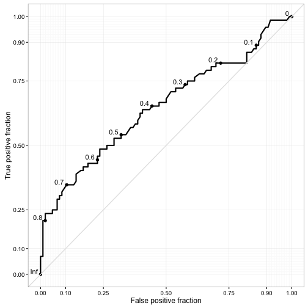
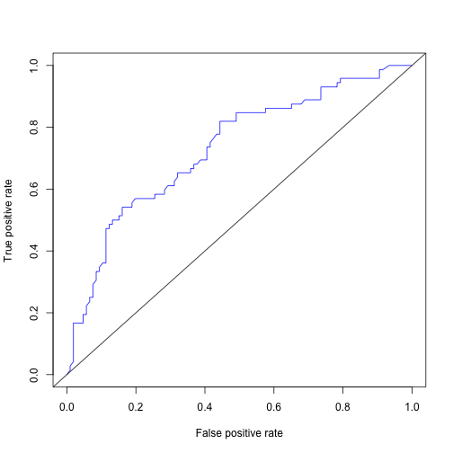

Jak hodować drzewa decyzyjne?
Jedną z najpopularniejszych technik konstrukcji modeli predykcyjnych są drzewa decyzyjne. Ich główną zaletą jest prosta interpretacja, oraz (relatywnie) prosta konstrukcja. Ich główną wadą jest duża wariancja a co idzie w parze, podatność na tzw. przeuczenie.
Ale po kolei.
Drzewa klasyfikacyjne, regresyjne, ...
Poniżej omówimy drzewa klasyfikacyjne, a więc takie, które opisują zmienną jakościowa występującą w dwóch lub większej liczbie klas.
Jednak w bardzo podobny sposób można skonstruować drzewa opisujące zmienną ciągłą (tzw. drzewa regresyjne), zmienna cenzurowaną lub inną zmienną.
Do przedstawienia zagadnienia konstrukcji drzewa decyzyjnego wykorzystamy zbiór danych o pasażerach statku Titanic. Interesować nas będzie jakie zmienne wpływają na to czy pasażer przeżył czy nie.
library(Przewodnik)
head(titanic)
## Survived Pclass Sex Age Fare Embarked
## 1 0 3 male 22 7.2500 S
## 2 1 1 female 38 71.2833 C
## 3 1 3 female 26 7.9250 S
## 4 1 1 female 35 53.1000 S
## 5 0 3 male 35 8.0500 S
## 6 0 3 male NA 8.4583 Q
Generyczne drzewo
Ogólny schemat budowy binarnego drzewa decyzyjnego wygląda następująco.
- Rozpoczynamy ze zbiorem
pzmiennych opisujących n obserwacji, naszym celem jest budowa drzewa opisującego zmienną y. - Dla każdego zbioru wykonujemy takie kroki
a. Dla każdej z
pzmiennych rozważamy wszystkie możliwe binarne podziały tej zmiennej, b. Dla każdego możliwego podziału wygenerowanego przez wybraną zmienną sprawdzamy jak zmieni się miara zróżnicowania zmiennejyw dwóch uzyskanych podzbiorach. Jako kandydujący podział wybieramy taki, który maksymalizuje zmianę miary zróżnicowania. c. Jeżeli spełnione są warunki podziału, to dzielimy zbiór na dwa podzbiory i wracamy do kroku 2. Jednym z warunków podziału jest by miara zróżnicowana zmiennejypo podziale zwiększyła się.
Istnieje wiele wersji szczegółowych powyższego algorytmu, w zależności od tego jakie miary i jak są maksmalizowane. Poniżej omówimy dwie najbardziej popularne.
Rekursywne podziały
Dwa klasyczne algorytmy rekursywnego podziału to CART (Classification And Regression Tree) i rodzina klasyfikatorów ID3, C4.5, C5.0 (rozwijane przez Rossa Quinlan).
W obu algorytmach drzewo budowane jest w sposób rekursywny. Dla każdego węzła w drzewie wybierany jest optymalny podział elementów tego węzła na dwie grupy w oparciu o pojedynczą zmienną. Algorytmy te różnią się miarą wykorzystywaną do oceny który podział jest najlepszy.
W algorytmie CART wykorzystywana jest miara ,,czystości'' węzła Gini impurity. Jest ona wyznaczana jako prawdopodobieństwo, że losowo wybrany element będzie niepoprawnie zaklasyfikowany, jeżeli klasyfikacja jest wykonywana losowo z zachowaniem proporcji w węźle.
Wybierany jest podział, który maksymalizuje czystość węzłów.
Algorytm CART działa również dla ciągłych zmiennych. W tym przypadku za optymalizowany współczynniki wybiera się redukcję wariancji pomiędzy rodzicem a węzłami potomnymi.
W algorytmie C4.5 i C5.0 wykorzystywany jest współczynnik Information gain, wyznaczany jako entropia węzła rodzica minus suma ważonych entropii węzłów pochodnych. Gdzie entropia jest wyznaczana jako
Podział jest powtarzany tak długo, aż osiągnięty jest warunek stopu.
Warunek stopu może dotyczyć maksymalnej głębokości drzewa, minimalnej wielkości w drzewie lub minimalnej wymaganej czystości węzła.
Otrzymywane drzewa są często bardzo głębokie, więc następnie są wtórnie przycinane. Ten proces określa się jako ang. prunnig.
Powyżej opisany schemat można rozszerzać na wiele sposobów. Jednym zprzydatnych uogólnień jest użycie różnych funkcji straty, które wprost wskazują jak kosztowe są określone błędy w klasyfikacji. Więcej informacji o dodatkowych opcji można przeczytac w dokumencie https://cran.r-project.org/web/packages/rpart/vignettes/longintro.pdf.
Przykłady w R
W pakiecie rpart zaimplementowany jest algorytm CART. W pakiecie C50 zaimplementowany jest algorytm C5.0.
library(rpart)
library(rpart.plot)
drzewo <- rpart(Survived~., data=titanic)
rpart.plot(drzewo)

drzewo <- rpart(Survived~., data=titanic,
control = rpart.control(minsplit = 5, maxdepth=2))
rpart.plot(drzewo)

Więcej informacji o tym jak rysować ładniejsze drzewa http://www.milbo.org/rpart-plot/prp.pdf
Warunkowe testowanie
Szczegółowy opis tego algorytmu znajduje się na stronie https://cran.r-project.org/web/packages/partykit/vignettes/ctree.pdf
Tym razem będziemy chcieli naprawić problemy wyżej przedstawionej implementacji:
- przeuczenie, o ile nie stosuje się dodatkowych warunków zatrzymania podziału węzłów,
- tzw. selection bias wynikający z tego, że zmienne mające wiele możliwych punktów podziału mają większą szansę na bycie wybranymi w skutek czysto losowych fluktuacji.
W tym podejściu wykorzystamy testy statystyczne by kontrolować oba powyższe problemy.
Procedura budowy drzewa jest następująca:
- Rozpoczynamy ze zbiorem
pzmiennych opisujących n obserwacji, naszym celem jest budowa drzewa opisującego zmienną y. - Dla każdego zbioru wykonujemy test weryfikujący czy którakolwiek ze zmiennych p jest istotnie statystycznie zależna od zmiennej
y. Jeżeli hipoteza zerowa nie zostanie odrzucona to przerywamy dalszy podział tego zbioru. Jeżeli zostanie odrzucona to przechodzimy z tym zbiorem do kolejnego kroku. - Wybieramy zmienną $X_i$ ze zbioru
pzmiennych o najsilniejszej zależności od zmiennejy. - Dla zmiennej $X_i$ wyznacz optymalny podział zmiennej na dwa rozłączne podzbiory. Z dwoma tak utworzonymi zbiorami powróć do kroku 2.
Hipoteza globalna
Kroki 2 i 3 oparte są o test permutacyjny, który z kolei oparty jest o następującą statystykę dla $i$ tej zmiennej.
Funkcje $g()$ i $h()$ zależą od charakteru zmiennej $y$ (ciągła, cenzurowana, dyskretna).
Zauważmy, że statystyka $T_i$ nie musi być jednowymiarowa, jej wymiar zależy od funkcji $g()$, która zmienną objaśniającą może zakodować jako kilka tzw. dummy variables (częste dla zmiennych jakościowych), oraz funkcji $h()$, która dla wielowymiarowego $y$ również może mieć więcej niż jedną współrzędną.
Statystyka $T_i$ jest redukowana do statystyki jednowymiarowej przez uprzednie ustandaryzowanie a następnie zastosowanie jednej z dwóch transformacji, wartości maksymalnej składowych albo sumy kwadratów.
Statystyki testowe nie mogą być bezpośrednio porównywane z uwagi na różne skale (wynikające np. z różnej liczby składowych $p,q$).
Aby móc porównywać zmienne, dla każdej zmiennej, na podstawie statystyki testowej, wyznaczana jest p-wartość.
Hipoteza globalna o łącznym wpływie zmiennych jest weryfikowana na podstawie minimalnej p-wartości, po ewentualnej korekcie Bonferroniego.
Optymalny podział
W kroku 4. dla wybranej zmiennej wybierany jest optymalny podział. Również on oparty jest o test permutacyjny.
Dla różnych podziałów na dwie grupy wyznaczana jest statystyka $T_i$. Optymalny podział wyznaczany jest przez maksymalizację wartości statystyki testowej.
Przykłady w R
Zbudujmy jednopoziomowe drzewo decyzyjne dla zmiennej Survived ze zbioru danych titanic.
library(party)
drzewo <- ctree(Survived~., data=titanic,
controls = ctree_control(maxdepth=1))
plot(drzewo)

Argumentem ctree_control możemy określić dodatkowe parametry, takie jak maksymalna głębokość drzewa.
drzewo <- ctree(Survived~., data=titanic,
controls = ctree_control(maxdepth=3))
plot(drzewo)

Również tym argumentem możemy określić sposób korekty p-wartości, poziom istotności dla testu, sposób redukcji statystyki testowej, minimalna wielkość węzła do podziału.
drzewo <- ctree(Survived~., data=titanic,
controls = ctree_control(maxdepth=3,
teststat = "quad",
testtype = "Bonferroni",
mincriterion = 0.9999,
minsplit = 5))
plot(drzewo)

Zmienna objaśniana może być jednowymiarowa, wielowymiarowa, jakościowa, ilościowa lub nawet cenzorowana.
Poniżej prezentujemy przykład dla analizy przeżycia pacjentek chorych na BRCA.
drzewo <- ctree(Surv(time/365, death)~.,
data=brca,
controls = ctree_control(maxdepth=2))
plot(drzewo)